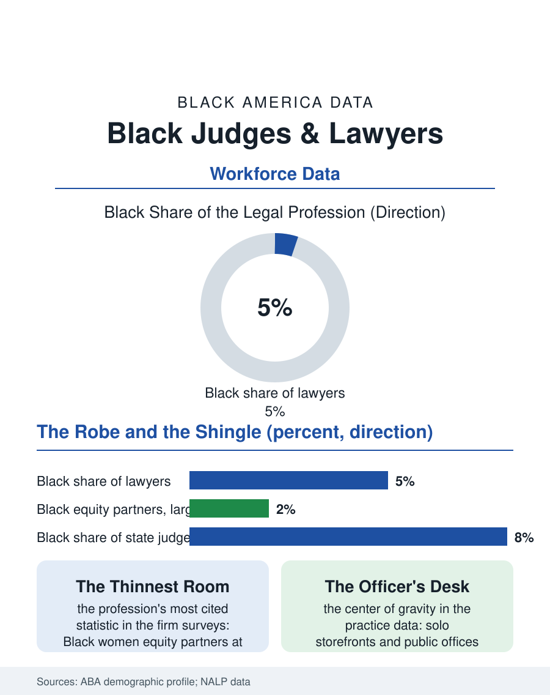

Black Employment
The Robe and the Shingle: Black Judges and Lawyers
Five percent of the profession that staffs the state's conscience, thinnest at the partnership and fullest at the public defender's desk. The law file.

Black lawyers constitute roughly five percent of the American legal profession and Black judges a similar share of the bench, in the profession that staffs the state's own conscience, with the distribution by tier, the large firm partnership and the federal bench thinnest, the public sector and the solo practice fullest, that the bar's own demographic surveys document. This article reads the judges and lawyers file.
The Partnership and the Robe
The American Bar Association's demographic profile gives the file its spine: the Black share of all lawyers runs near five percent, a figure essentially unmoved across the survey's recent decades despite the law schools' fuller cohorts, because the profession's attrition equals its intake in the pattern of the faculty file's. The large law firm tier is the file's thinnest room: the national law firm surveys place Black partners, equity holders, in the low single digits of the partnership, Black women partners a fraction of one percent, the profession's most cited statistic of exclusion, composed by the associate funnel's attrition at the client-development threshold where the book's allocation follows the networks of the banking file's in wig and gown. The bench divides by its method of choosing in the data: the appointed federal bench's Black share reflects the appointing presidents' varying records, the state elected benches reflect their electorates, and the state appointed systems their governors, with the prosecutorial and public defender offices, the trial bench's farm system, carrying the public tier's fuller Black ranks. The judiciary's own file holds the paradox the robe creates: the Black judge presides over a system whose defendant and confined populations are disproportionately Black, a fact the sentencing and courtroom studies examine from the bench's own side of the rail, finding the judge's race a modest variable against the system's structural weights, a finding the judges' own association discusses with a candor the file honors.
Solo Practice and the Public Tier
The profession's center of Black gravity is the solo and small practice of the business file's law firms and the public sector's offices: the public defender, the prosecutor, the agency counsel, and the legal aid attorney, whose salaries are the profession's floor and whose caseloads are its conscience's measure. The solo practitioner's economics are the small business file's, the storefront office on the corridor handling the community's legal life entire, the deed, the will, the custody, the charge, in the general practice the profession's specialization era abandoned, and the practitioner's civic role, the lawyer as the community's officer class, descends from the era when the Black lawyer was, with the minister and the undertaker, the leadership the exclusion era produced. The law school pipeline above the profession narrowed in the current era's data, the Black enrollment share falling from its peak as the admissions and debt variables compounded, the debt file's six-figure medians falling on the graduates headed for the public tier's salaries, a mismatch the loan programs only partly paper over.
The Long Docket
The judges and lawyers file closes on the profession's historical weight in Black life, which exceeds its five percent by an order of moral magnitude: the freedom struggle was substantially litigated, its generals the lawyers of the Legal Defense Fund's generation, and the profession's place in the community's imagination descends from the courtroom as the one room where the century's argument could be made on the record. The current file's obligation, as its own bar associations state it, is the pipeline's repair and the bench's widening, measured in the same surveys that show the share unmoved. The bureau of this file is the bar's own census, published annually, confessing the same number with professional precision. The robe and the shingle both wait on the cohorts now deciding, and the file's last entry is the courtroom's: the law is the only profession in this atlas whose members are sworn to the system's improvement as a condition of the license, and the five percent who hold it in Black hands carry that oath into rooms, the partnership meeting and the sentencing alike, where their presence is the record's own evidence of how far the argument has traveled and how far the docket still runs.
More in Black Employment
The Black Unemployment Rate: The Two-to-One Pattern
Black unemployment runs at roughly twice the White rate — 5.5 percent against 3.3 percent in annual averages — a ratio stable across five decades of federal data. How it is measured and why it persists.
Black Median Weekly Earnings: The 80-Cent Ratio
Black full-time workers earn a median of about $900 a week — roughly 80 cents for every dollar White workers earn. The BLS earnings data by group, gender, and occupation.
Black Labor Force Participation: Working at National Rates
Black labor force participation runs at roughly the national rate — and Black women participate at higher rates than White women. The BLS participation data.
Source: American Bar Association, National Lawyer Population Survey and demographic profile; National Association for Law Placement diversity reports.